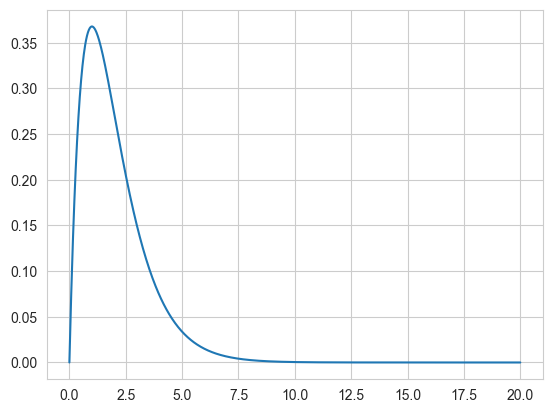
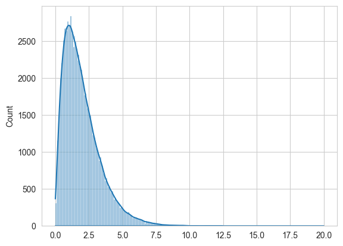
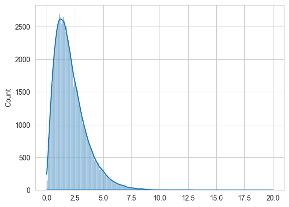
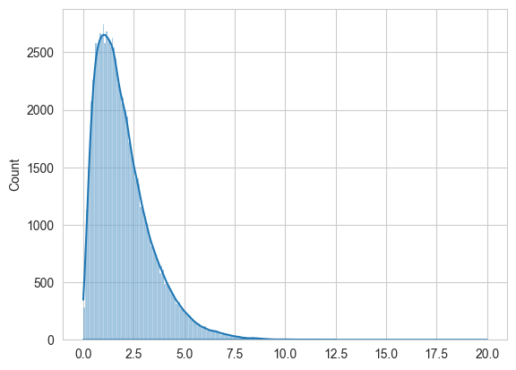

%matplotlib inline
import numpy as np
import scipy as sp
import matplotlib as mpl
import matplotlib.cm as cm
import matplotlib.pyplot as plt
import pandas as pd
pd.set_option('display.width', 500)
pd.set_option('display.max_columns', 100)
pd.set_option('display.notebook_repr_html', True)
import seaborn as sns
sns.set_style("whitegrid")Metropolis and Support Mismatch
Why combining rejection with Metropolis sampling wastes efficiency.
mcmc
sampling
Demonstrates the efficiency loss when combining rejection sampling with Metropolis by using a proposal distribution with larger support than the target. Shows that a significant fraction of acceptances are wasted on out-of-support proposals.
From https://darrenjw.wordpress.com/2012/06/04/metropolis-hastings-mcmc-when-the-proposal-and-target-have-differing-support/
As a simple example, lets target Gamma(2,1) or \(xe^{-x}, x \gt 0\).
target = lambda x: x*np.exp(-x)
xx = np.linspace(0, 20, 1000)
plt.plot(xx, target(xx));
Using Metropolis to sample
Here, copied from before, is the metropolis code.
def metropolis(p, qdraw, nsamp, xinit):
samples=np.empty(nsamp)
x_prev = xinit
for i in range(nsamp):
x_star = qdraw(x_prev)
p_star = p(x_star)
p_prev = p(x_prev)
pdfratio = p_star/p_prev
if np.random.uniform() < min(1, pdfratio):
samples[i] = x_star
x_prev = x_star
else:#we always get a sample
samples[i]= x_prev
return samplesdef prop(x):
return np.random.normal(x, 1.0)
out = metropolis(target, prop, 100000, 1.0)sns.histplot(out, kde=True)
plt.plot(xx, target(xx));
Since we use the functional form directly without checking for \(x \gt 0\), we are not sampling on the correct support. This does not land up costing us, as the acceptance ratio being negative the first time we sample a negative \(x\) will ensure that we never sample a negative \(x\). We would be better using scipy.stats built in gamma support.
We have seen this before, in sampling from a weibull using a normal as well. Also from sampling from a function only defined on [0,1]. Some people consider the lax use of a larger-support proposal a bug. But it does not bite us anywhere but efficiency due to the mechanism of the acceptance ratio.
Let us see what this lack of efficiency is:
def metropolis_instrument(p, qdraw, nsamp, xinit):
samples=np.empty(nsamp)
x_prev = xinit
acc1 = 0
rej_neg = 0
for i in range(nsamp):
x_star = qdraw(x_prev)
p_star = p(x_star)
p_prev = p(x_prev)
pdfratio = p_star/p_prev
if np.random.uniform() < min(1, pdfratio):
samples[i] = x_star
x_prev = x_star
acc1 += 1
else:#we always get a sample
if x_star < 0:
rej_neg += 1
samples[i]= x_prev
return samples, acc1, rej_negout2, a1, rn = out = metropolis_instrument(target, prop, 100000, 1.0)a1/100000, rn/(100000 - a1)(0.72835, 0.36447634824222347)Thus, out of a 73% acceptance, a full 36% is wasted on proposing negatives.
A wrong built-in regection sampler
You might think that simply rejecting is ok, but you would be wrong. You are then sampling from some other distribution.
def metropolis_broken(p, qdraw, nsamp, xinit):
samples=np.empty(nsamp)
x_prev = xinit
for i in range(nsamp):
while 1:
x_star = qdraw(x_prev)
if x_star > 0:
break
p_star = p(x_star)
p_prev = p(x_prev)
pdfratio = p_star/p_prev
if np.random.uniform() < min(1, pdfratio):
samples[i] = x_star
x_prev = x_star
else:#we always get a sample
samples[i]= x_prev
return samples
out3 = metropolis_broken(target, prop, 100000, 1.0)
sns.histplot(out3, kde=True)
plt.plot(xx, target(xx));
Fix using MH
To fix this use Metropolis-Hastings instead and sample from a distribution eith the correct support, a truncated normal. Since the truncated normal is not symmetric:
\[ \frac{e^{(x-x_0)^2}}{CDF(x)} != \frac{e^{(x_0-x)^2}}{CDF(x_0)} \]
we must use a MH Sampler
def metropolis_hastings(p,q, qdraw, nsamp, xinit):
samples=np.empty(nsamp)
x_prev = xinit
accepted=0
for i in range(nsamp):
while 1:
x_star = qdraw(x_prev)
if x_star > 0:
break
p_star = p(x_star)
p_prev = p(x_prev)
pdfratio = p_star/p_prev
proposalratio = q(x_prev, x_star)/q(x_star, x_prev)
if np.random.uniform() < min(1, pdfratio*proposalratio):
samples[i] = x_star
x_prev = x_star
accepted +=1
else:#we always get a sample
samples[i]= x_prev
return samples, acceptedfrom scipy.stats import norm
def prop2(x):
return x + np.random.normal()
def q(x_prev, x_star):
num = norm.cdf(x_prev)
return numout4, _ = metropolis_hastings(target, q, prop2, 100000, 1.0)Now we get the correct output!
sns.histplot(out4, kde=True)
plt.plot(xx, target(xx));